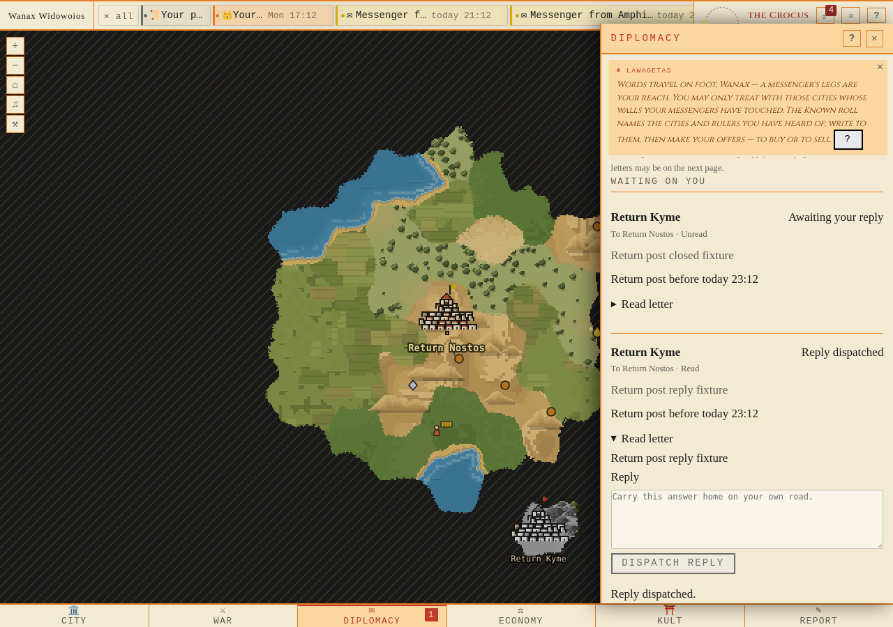
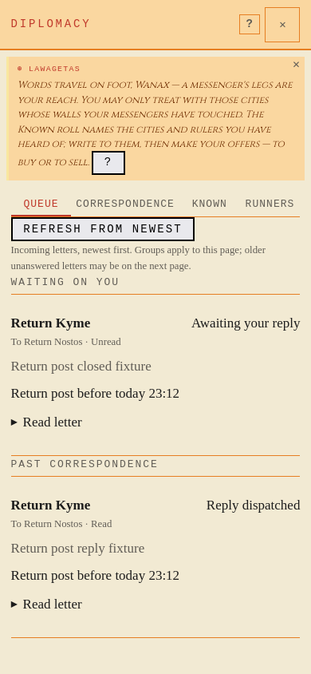
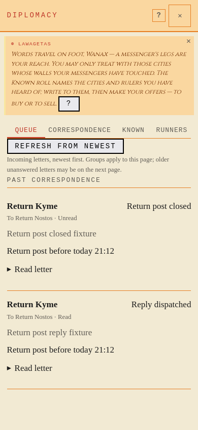

Return post
Final fresh runtime. Native1:1 pictures; scroll figures horizontally if needed. Evidence and explicit fixture limits.
A1 · Open return-post window and prepared reply · Open pictureA2 · Same bearer carries the dispatched answer · Open picture
A3 · Mobile open window and answered letter · Open picture
A4 · Mobile closed window and answered letter remain distinct · Open picture